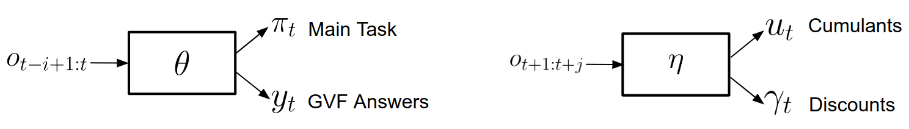

Discovery of Useful Questions as Auxiliary Tasks
In case you’re wondering what happened to your feed reader this week: We’ve decided to retitle all of the arXiv highlights posts to be more attractive. We promise not to do this often, but it seemed like a good time to do it while we’re inconveniencing very few people.
This week
This week’s paper is Discovery of Useful Questions as Auxiliary Tasks from the University of Michigan and DeepMind. It was accepted to NeurIPS 2019 (which I rather hope I’ll be attending). The paper contains a very exciting concept that strikes at the heart of human learning: We learn not only by noticing statistical correlations and inferring concepts, but by actively seeking the answers to helpful questions that occur to us as we navigate the world. That’s also much of what science is about: increasing your understanding of the world by choosing particularly good questions to ask.
Useful questions as an auxiliary task
The authors formulate the problem as a reinforcement learning problem with a main task you’d like to accomplished, augmented with auxiliary tasks generated by the system itself to aid in representation learning, and ultimately to accomplish the main task more efficiently. I’ve mentioned before that this is of professional interest to me.
In this paper the questions are represented as “general value functions” (GVFs), “a fairly rich form of knowledge representation”, because
GVF-based auxiliary tasks have been shown in previous work to improve the sampling efficiency of reinforcement learning agents engaged in learning some complex task…. It was then shown that by combining gradients from learning the auxiliary GVFs with the updates from the main task, it was possible to accelerate representation learning and improve performance. It fell, however, onto the algorithm designer to design questions that were useful for the specific task.
The main insight in this paper is that the gradients induced while learning the main task contain information about what questions would aid in learning a helpful representation.
The main idea is to use meta-gradient RL to discover the questions so that answering them maximises the usefulness of the induced representation on the main task.
Auxiliary tasks
Why should learning something other than the main task help? It teaches composable fundamentals relevant to the task so that the neural network doesn’t have to learn everything from scratch all at once. The kinds of auxiliary tasks we’re talking about here are things like controlling pixel intensities and feature activations. Other examples mentioned in the paper are auxiliary tasks where the agent needed to learn to measure depth, loop-closures (e.g., the letter “C” is not closed, but the letter “O” is), observation reconstruction (which, as an aside, can be used in the construction of intrinsically-motivated, “curious” agents), reward prediction, etc. When agents were required to learn each of these tasks simultaneously with learning their own main tasks, they learned more efficiently than when they were required to learn their main task alone.
But, as we just discussed, each of these examples (see the paper for more) and were hand-crafted. The agents themselves did not attempt to add to their tasks, and careful hand-tuning was required to get the observed improvements.
Meta-learning
A meta-learner progressively improves the learning process of a learner that is attempting to solve some task.
I can hardly overstate how useful this is. In my own work, we aren’t done as soon as we’ve trained a neural network to perform well on a single task. There is an entire host of related tasks on which we’ll need to retrain it in the future. Our work involves training an agent to control the behavior of some software, which is not fixed. If our agent cannot be quickly retrained on other software (perhaps out of our direct control), then it becomes much more expensive and difficult to maintain.
This paper mentions previous work in learning better initializations for a given task, learning to explore, unsupervised learning to develop a good or compact representation, few-shot model adaptation, and learning to improve the optimizers.
The discovery of useful questions
This is Figure 1 of our paper, depicting the architecture that discovers and uses useful questions. It consists of two neural networks, a main task & answer network parametrized by \(\theta\), and a question network parametrized by \(\eta\). The main task & answer network takes the last \(i\) observations \(o_{t-i+1:t}\) in and produces two categories of output: a) decisions from the policy \(\pi_t\) and b) answers to the “useful questions” \(y_t\). The question network takes \(j\) future observations \(o_{t+1:t+j}\), and produces two outputs: a) cumulants \(u_t\), and b) discounts \(\gamma_t\). Cumulants (a term from the GVF literature) are described as scalar functions of the state, the sum of which must be maximized. To me, this just sounds like an obstruse way to say “other loss function”, which makes sense because these are what are describing our auxiliary goals.

Lest you think this method requires time travel, fear not. We can see \(j\) steps into the future using the time machine of Waiting, which is ok because it only happens during training.
As the authors explain, previous work with auxiliary tasks would have only had the main task & answer network on the left, because the cumulants and discounts were hand-crafted. The question network on the right, and its effective use, is the main contribution of this paper. The number of “other loss functions” is still fixed, but the components of the actual functions that compute them (cumulants and discounts) are represented by an \(\eta\)-parametrized neural network that is itself trained on the gradients of the \(\theta\)-parametrized main task and answer network.
In the researcher’s own words:
In their most abstract form, reinforcement learning algorithms can be described by an update procedure \(\Delta \theta_t\) that modifies, on each step \(t\), the agent’s parameters \(\theta_t\). The central idea of meta-gradient RL is to parameterise the update \(\Delta \theta_t(\eta)\) by meta-parameters \(\eta\). We may then consider the consequences of changing \(\eta\) on the \(\eta\)-parameterised update rule by measuring the subsequent performance of the agent, in terms of a “meta-loss” function \(m(\theta_{t+k})\). Such meta-loss may be evaluated after one update (myopic) or \(k > 1\) updates (non-myopic). The meta-gradient is then, by the chain rule, \[\begin{align} {\partial m(\theta_{t+k})} \over {\partial\eta} &= {\partial m(\theta_{t+k}) \over \partial\theta_{t+k}} {\partial\theta_{t+k} \over \partial\eta}.\label{eqn:no_approx} \end{align}\]
The actual computation of this is challenging, because changing \(\eta\) affects updates to \(\theta\) on all future timesteps. This is the reason training the question network requires looking \(j\) steps “into the future”. Holding \(\eta\) fixed, they compute \(\theta_t \rightarrow ... \rightarrow \theta_{t+j}\), in order to finally compute the meta-loss evaluation \(m(\theta_{t+j})\).
The algorithm then alternates between normal RL training of the main task & answer network, and meta-gradient training of the question network to produce and use questions that maximize the performance of the agent on the original task. It is a very general solution, and empirically outperforms hand-designed auxiliary tasks in many cases.
Parting thoughts
- The authors themselves note that their algorithm augments an on-policy reinforcement learning algorithm, and I look forward to their promised future work adapting these techniques to an off-policy setting.
- I notice I take detours from the main article purposes to write about areas of RL that I want to remember to investigate further in the future (e.g., auxiliary task in general, and meta-learning in general). That’s a good habit, though I’ll need to remember to cultivate it without seeming too distracted.
- This paper mentions that Xu et al. in 2018 tried learning the discount factor \(\gamma\) and the bootstrapping factor \(\lambda\) (using meta-gradients), which is an idea I had myself (a year later). Apparently this substantially improved performance on the Atari domain, so I feel vindicated.